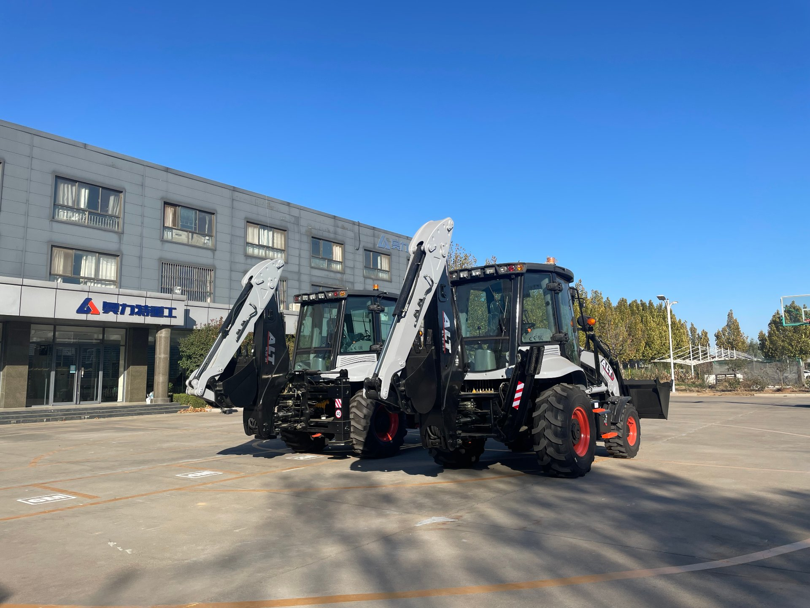

Every machine ends up parked at some point. How it is parked is the difference between a machine that starts on the first pull and one that needs a trip to the shop.
Why Bad Storage Hurts More Than Hard Work
I want to correct a myth before anything else. Most people assume the risk with machinery comes from using it — wear, breakdowns, operator error. In reality, a machine that sits is often rougher on its own components than a machine that runs every week:
- Seals and hoses dry out. Rubber that flexes daily stays supple. Rubber that sits still for months loses its oils, hardens, and cracks — and a hardened hydraulic seal is a leak waiting for the first time you put pressure on it.
- The battery sulfate. A lead-acid battery left to drain slowly builds a crystalline coating on its plates that kills its capacity permanently. This is the single most common reason a "fine" machine won't start after a winter.
- Moisture becomes corrosion. Condensation inside a fuel tank, a cylinder bore, or a differential is the quiet one. It has no sound and no smell — it just attacks metal from the inside while you are not looking.
- Fuel ages. Diesel stored for months can grow algae and gum, clog filters, and reach the pump as a mess rather than a fuel.
None of this shows up the day you park it. All of it shows up the day you try to start it. That is why storage is a care task, not a get it out of the way task.
Where to Park It: The First Decision
Location does half the job before you touch a single tool. The ideal is a dry, ventilated, covered space — a barn, a lean-to, or at minimum a tarped but not sealed-off area. Here is why each matters:
- Out of direct sunlight. Ultraviolet light degrades hoses and tires faster than anything else. A machine baked by sun for a season will have cracked sidewalls and brittle belts.
- Off the mud and puddles. Water standing around a machine climbs into any seal by capillary action. A concrete pad, packed gravel, or even a sheet of plywood under the tires beats bare wet ground.
- Under cover but with airflow. A machine sealed tight under a tarp with no ventilation traps condensation inside. You want it protected from rain and sun, but able to breathe — a tarp draped loosely with an open end, not shrink-wrapped like a tomb.
- Flat ground, wheels chocked. You do not want a machine slowly migrating downhill over a season. Chock the wheels and, if the ground is soft, put a board under the stabilizers so they do not sink and leave the frame twisting.
If you only have outdoor space and no cover, a loose tarp with a gap for airflow is still far better than nothing — just check it after heavy rain so it has not turned into a puddle collector.

The engine bay and the hydraulic lines are where a machine ages first when it is left to sit. A quick look here before you park it — and when you bring it back — tells you most of what you need to know.
The 20-Minute Pre-Park Checklist
Do these the day you park it, and the machine will thank you months later. It takes about twenty minutes and costs nothing but a little soap, grease, and a battery maintainer:
- Wash it. Mud and caked dirt hold moisture against metal and hide hairline cracks. A clean machine is a dry machine.
- Grease every fitting. The grease you apply now protects the joints while they sit, and pushes out any water that has crept in.
- Top up the fuel tank and add a stabilizer. A full tank leaves less room for condensation inside it. Add a fuel stabilizer so the diesel does not gum up while it sits.
- Run the engine, then shut it down at operating temperature. This burns off condensation already inside the crankcase and circulates oil one last time over the internals.
- Disconnect or maintain the battery. The best option is a smart battery maintainer that keeps it topped up. If you do not have one, disconnect the negative terminal so nothing slowly drains it.
- Lower all the equipment to the ground. The loader arms and the backhoe bucket should rest on the ground or on blocks, not hang in the air. This takes load off the hydraulic cylinders and seals.
- Crack the windows or leave the cab vent open a touch. The greatest enemy of a cab is trapped humidity. A little airflow stops the mold and the fogged glass.
Cover What Is Worth Covering
You do not need a full fitted cover (though a good one helps). What matters is protecting the parts that degrade in the open:
- Hoses and lines. Exposure is the enemy. Keep them out of direct sun and away from standing water.
- Exhaust and air intakes. A simple cover over the exhaust stack and any open intake keeps birds, insects, and rain out. A nesting bird is a real — and expensive — surprise on restart.
- Tires. If you can, park on dry ground and check the pressure. Tires left flat on wet earth crack at the sidewall and soften at the base where the weight sits.
- The seat and control console. A seat cover or even an old tarp keeps the upholstery and switches from cracking under UV. A brittle switch is annoying; a cracked loom is a wiring fault.
Start a Simple Storage Log
This one is free and it is the difference between an expert and a guesser. Keep a one-page note (or a note on your phone) with three things: the date you parked it, what you did to prepare it, and a reminder of when to check it again. Every month or two, walk out and do a two-minute inspection:
- Is the battery still holding charge?
- Any fresh oil or hydraulic fluid under the machine?
- Any water pooled on or near it?
- Are the hoses still intact, or starting to crack where they bend?
A machine is not "parked" — it is in a state that changes every week. A quick monthly look turns a three-month problem into a five-minute fix.
How to Bring It Back Into Service
Restarting is not just cranking the key. Do it in order and you avoid the two most common damage points:
- Check the oil and all fluid levels first. Never run it dry.
- Inspect the fuel for water or gum. If it has been parked a long time, drain a little from the filter and check it is moving.
- Reconnect and charge the battery fully. A sulfated battery that reads "fine" on a charger may still not hold a load — if it is old, test it under a load.
- Check tires and chocks. Confirm the pressure and that the machine is where you left it.
- Cycle the hydraulics gently. Before you put it to work, slowly move every cylinder through its full range a few times, with no load. This rebuilds the film of oil on the seals that a long park stripped away — and it is the fastest way to spot a seal that has hardened while the machine sat. If you want to understand why this matters, my guide to the hydraulic system explains exactly what the seals and fluid are doing.
- Warm it up before any load. Let the engine reach operating temperature and the hydraulics warm before you dig or lift anything heavy.
Take it easy for the first hour. The machine has been asleep; give it time to wake up properly.
What Good Storage Prevented: The Honest Limits
I will be straight with you: storage cannot make a machine immortal, and long-term idle use still wears the components you cannot see. The seals and the battery and the paint — those you can protect. But a machine left for a year or two will still need its fluids changed and a real check before it goes back to work. Regular maintenance matters most around the moment you return a machine to service, not only when it is running. If you are deciding whether an idle machine is worth keeping, read how long a backhoe loader actually lasts — the answer changes how much effort to put into a long park.
And if the "off-season" you are worried about is really a decision about whether to keep the machine at all, that is a different question entirely — and an honest one to ask.
The one-line version: wash it, grease it, fill the tank, lower the equipment, maintain the battery, and let it breathe. Twenty minutes the day you park it saves a shop trip when you start it.
The Point of All This
Here is what I keep coming back to. A backhoe loader is a working tool, and the worst thing you can do to a working tool is leave it to rot in a corner. But a machine that is looked after — even when it is parked — is a machine you can trust to start when you need it. Whether you are storing it for a wet season, a quiet market, or just a gap between jobs, the same small habits apply.
From my side of the camera, I will say this plainly: the machines you see in our yard are cleaned, greased, and cared for before they ship, and they are cared for the same way while they wait. That is not a sales line — it is the difference between a machine that works for years and one that disappoints on its second job. If you want a machine you can trust to start the day it arrives and every day after, I am happy to walk you through the exact machine you are considering and how to look after once it is yours.
Ask Me How to Look After the Machine You Are Buying
Storage is only one part of the story. I would rather tell you honestly what a backhoe loader needs over its whole life — storage, maintenance, and the parts you should keep on the shelf — than hand you a machine and disappear. Send me the model you are considering and I will walk you through what it actually takes to keep it running.
WhatsApp Vivian About Machine Care